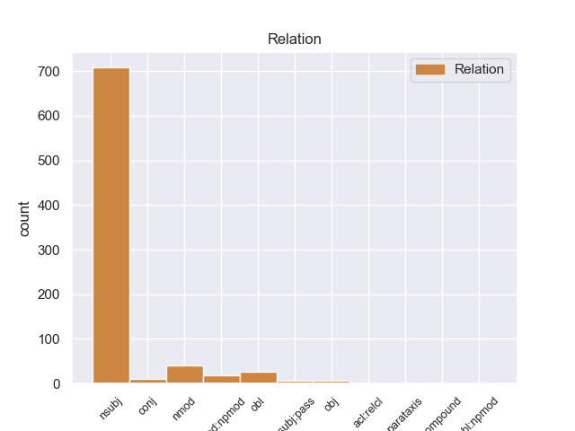
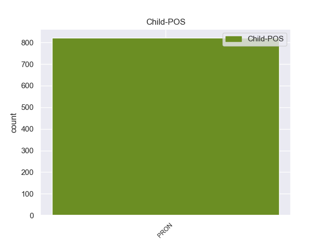

Distribution of features within this leaf



Morphosyntax Rules sorted by frequency.
- When the dependent token is the nominal subject(nsubj) of the head token, and the head token is NOUN the Gender needs to be Neut.
1 However _ _ _ _ 0 _ _ _
2 , _ _ _ _ 0 _ _ _
3 when _ _ _ _ 0 _ _ _
4 he _ _ _ _ 0 _ _ _
5 printed _ _ _ _ 0 _ _ _
6 out _ _ _ _ 0 _ _ _
7 the _ _ _ _ 0 _ _ _
8 service _ _ _ _ 0 _ _ _
9 quote _ _ _ _ 0 _ _ _
10 , _ _ _ _ 0 _ _ _
11 I _ _ _ _ 0 _ _ _
12 could _ _ _ _ 0 _ _ _
13 see _ _ _ _ 0 _ _ _
14 that _ _ _ _ 0 _ _ _
15 it it PRON PRP Case=Nom|Gender=Neut|Number=Sing|Person=3|PronType=Prs 20 nsubj 20:nsubj|28:nsubj _
16 was _ _ _ _ 0 _ _ _
17 NOT _ _ _ _ 0 _ _ _
18 the _ _ _ _ 0 _ _ _
19 correct _ _ _ _ 0 _ _ _
20 tire tire NOUN NN Number=Sing 0 _ _ _
21 , _ _ _ _ 0 _ _ _
22 and _ _ _ _ 0 _ _ _
23 was _ _ _ _ 0 _ _ _
24 not _ _ _ _ 0 _ _ _
25 even _ _ _ _ 0 _ _ _
26 an _ _ _ _ 0 _ _ _
27 appropriate _ _ _ _ 0 _ _ _
28 tire _ _ _ _ 0 _ _ _
29 for _ _ _ _ 0 _ _ _
30 my _ _ _ _ 0 _ _ _
31 car _ _ _ _ 0 _ _ _
32 model _ _ _ _ 0 _ _ _
33 . _ _ _ _ 0 _ _ _
1 Once _ _ _ _ 0 _ _ _
2 I _ _ _ _ 0 _ _ _
3 actually _ _ _ _ 0 _ _ _
4 got _ _ _ _ 0 _ _ _
5 back _ _ _ _ 0 _ _ _
6 in _ _ _ _ 0 _ _ _
7 my _ _ _ _ 0 _ _ _
8 car _ _ _ _ 0 _ _ _
9 , _ _ _ _ 0 _ _ _
10 it it PRON PRP Case=Nom|Gender=Neut|Number=Sing|Person=3|PronType=Prs 12 nsubj 12:nsubj|14:nsubj _
11 was _ _ _ _ 0 _ _ _
12 dirty dirty ADJ JJ Degree=Pos 0 _ _ _
13 and _ _ _ _ 0 _ _ _
14 had _ _ _ _ 0 _ _ _
15 grease _ _ _ _ 0 _ _ _
16 all _ _ _ _ 0 _ _ _
17 over _ _ _ _ 0 _ _ _
18 the _ _ _ _ 0 _ _ _
19 steering _ _ _ _ 0 _ _ _
20 wheel _ _ _ _ 0 _ _ _
21 . _ _ _ _ 0 _ _ _
1 I _ _ _ _ 0 _ _ _
2 'm _ _ _ _ 0 _ _ _
3 pretty _ _ _ _ 0 _ _ _
4 sure _ _ _ _ 0 _ _ _
5 for _ _ _ _ 0 _ _ _
6 the _ _ _ _ 0 _ _ _
7 cast _ _ _ _ 0 _ _ _
8 that _ _ _ _ 0 _ _ _
9 it it PRON PRP Case=Nom|Gender=Neut|Number=Sing|Person=3|PronType=Prs 14 nsubj 14:nsubj _
10 was _ _ _ _ 0 _ _ _
11 the _ _ _ _ 0 _ _ _
12 other _ _ _ _ 0 _ _ _
13 way _ _ _ _ 0 _ _ _
14 around around ADV RB _ 0 _ _ _
15 . _ _ _ _ 0 _ _ _
1 I _ _ _ _ 0 _ _ _
2 knew _ _ _ _ 0 _ _ _
3 what what PRON WP PronType=Int 0 _ _ _
4 it it PRON PRP Case=Nom|Gender=Neut|Number=Sing|Person=3|PronType=Prs 3 nsubj 3:nsubj _
5 was _ _ _ _ 0 _ _ _
6 and _ _ _ _ 0 _ _ _
7 told _ _ _ _ 0 _ _ _
8 the _ _ _ _ 0 _ _ _
9 guy _ _ _ _ 0 _ _ _
10 that _ _ _ _ 0 _ _ _
11 it _ _ _ _ 0 _ _ _
12 was _ _ _ _ 0 _ _ _
13 n't _ _ _ _ 0 _ _ _
14 a _ _ _ _ 0 _ _ _
15 fps _ _ _ _ 0 _ _ _
16 . _ _ _ _ 0 _ _ _
1 The _ _ _ _ 0 _ _ _
2 other _ _ _ _ 0 _ _ _
3 guy _ _ _ _ 0 _ _ _
4 was _ _ _ _ 0 _ _ _
5 pulled _ _ _ _ 0 _ _ _
6 over _ _ _ _ 0 _ _ _
7 one _ _ _ _ 0 _ _ _
8 day _ _ _ _ 0 _ _ _
9 and _ _ _ _ 0 _ _ _
10 a _ _ _ _ 0 _ _ _
11 cop _ _ _ _ 0 _ _ _
12 saw _ _ _ _ 0 _ _ _
13 suspicious _ _ _ _ 0 _ _ _
14 papers _ _ _ _ 0 _ _ _
15 with _ _ _ _ 0 _ _ _
16 names name NOUN NNS Number=Plur 0 _ _ _
17 and _ _ _ _ 0 _ _ _
18 social _ _ _ _ 0 _ _ _
19 security _ _ _ _ 0 _ _ _
20 numbers _ _ _ _ 0 _ _ _
21 on _ _ _ _ 0 _ _ _
22 it it PRON PRP Case=Acc|Gender=Neut|Number=Sing|Person=3|PronType=Prs 16 nmod 16:nmod:on SpaceAfter=No
23 . _ _ _ _ 0 _ _ _
1 Not _ _ _ _ 0 _ _ _
2 only _ _ _ _ 0 _ _ _
3 did _ _ _ _ 0 _ _ _
4 it _ _ _ _ 0 _ _ _
5 taste _ _ _ _ 0 _ _ _
6 wonderful _ _ _ _ 0 _ _ _
7 , _ _ _ _ 0 _ _ _
8 but _ _ _ _ 0 _ _ _
9 the _ _ _ _ 0 _ _ _
10 texture _ _ _ _ 0 _ _ _
11 was _ _ _ _ 0 _ _ _
12 unbelievable _ _ _ _ 0 _ _ _
13 , _ _ _ _ 0 _ _ _
14 the _ _ _ _ 0 _ _ _
15 frosting _ _ _ _ 0 _ _ _
16 was _ _ _ _ 0 _ _ _
17 n't _ _ _ _ 0 _ _ _
18 overly _ _ _ _ 0 _ _ _
19 sweet _ _ _ _ 0 _ _ _
20 to _ _ _ _ 0 _ _ _
21 over _ _ _ _ 0 _ _ _
22 power _ _ _ _ 0 _ _ _
23 the _ _ _ _ 0 _ _ _
24 cake _ _ _ _ 0 _ _ _
25 , _ _ _ _ 0 _ _ _
26 and _ _ _ _ 0 _ _ _
27 the _ _ _ _ 0 _ _ _
28 cake cake NOUN NN Number=Sing 0 _ _ _
29 itself itself PRON PRP Case=Acc|Gender=Neut|Number=Sing|Person=3|PronType=Prs|Reflex=Yes 28 nmod:npmod 28:nmod:npmod _
30 was _ _ _ _ 0 _ _ _
31 just _ _ _ _ 0 _ _ _
32 amazingly _ _ _ _ 0 _ _ _
33 soft _ _ _ _ 0 _ _ _
34 , _ _ _ _ 0 _ _ _
35 and _ _ _ _ 0 _ _ _
36 fluffy _ _ _ _ 0 _ _ _
37 , _ _ _ _ 0 _ _ _
38 and _ _ _ _ 0 _ _ _
39 just _ _ _ _ 0 _ _ _
40 perfect _ _ _ _ 0 _ _ _
41 overall _ _ _ _ 0 _ _ _
42 . _ _ _ _ 0 _ _ _
1 It it PRON PRP Case=Nom|Gender=Neut|Number=Sing|Person=3|PronType=Prs 5 nsubj 5:nsubj|12:nsubj _
2 is _ _ _ _ 0 _ _ _
3 next _ _ _ _ 0 _ _ _
4 to _ _ _ _ 0 _ _ _
5 Gare Gare PROPN NNP Number=Sing 0 _ _ _
6 du _ _ _ _ 0 _ _ _
7 Nord _ _ _ _ 0 _ _ _
8 and _ _ _ _ 0 _ _ _
9 a _ _ _ _ 0 _ _ _
10 five _ _ _ _ 0 _ _ _
11 minute _ _ _ _ 0 _ _ _
12 walk _ _ _ _ 0 _ _ _
13 to _ _ _ _ 0 _ _ _
14 Sacre _ _ _ _ 0 _ _ _
15 Coeur _ _ _ _ 0 _ _ _
16 which _ _ _ _ 0 _ _ _
17 is _ _ _ _ 0 _ _ _
18 excellent _ _ _ _ 0 _ _ _
19 for _ _ _ _ 0 _ _ _
20 shopping _ _ _ _ 0 _ _ _
21 . _ _ _ _ 0 _ _ _
1 It it PRON PRP Case=Nom|Gender=Neut|Number=Sing|Person=3|PronType=Prs 3 nsubj 3:nsubj _
2 was _ _ _ _ 0 _ _ _
3 4:50 4:50 NUM CD NumType=Card 0 _ _ _
4 when _ _ _ _ 0 _ _ _
5 a _ _ _ _ 0 _ _ _
6 friend _ _ _ _ 0 _ _ _
7 told _ _ _ _ 0 _ _ _
8 me _ _ _ _ 0 _ _ _
9 to _ _ _ _ 0 _ _ _
10 call _ _ _ _ 0 _ _ _
11 Bud _ _ _ _ 0 _ _ _
12 , _ _ _ _ 0 _ _ _
13 he _ _ _ _ 0 _ _ _
14 would _ _ _ _ 0 _ _ _
15 take _ _ _ _ 0 _ _ _
16 care _ _ _ _ 0 _ _ _
17 of _ _ _ _ 0 _ _ _
18 me _ _ _ _ 0 _ _ _
19 . _ _ _ _ 0 _ _ _
1 They _ _ _ _ 0 _ _ _
2 were _ _ _ _ 0 _ _ _
3 very _ _ _ _ 0 _ _ _
4 friendly _ _ _ _ 0 _ _ _
5 and _ _ _ _ 0 _ _ _
6 were _ _ _ _ 0 _ _ _
7 able _ _ _ _ 0 _ _ _
8 to _ _ _ _ 0 _ _ _
9 explain _ _ _ _ 0 _ _ _
10 me _ _ _ _ 0 _ _ _
11 exactly _ _ _ _ 0 _ _ _
12 what _ _ _ _ 0 _ _ _
13 was _ _ _ _ 0 _ _ _
14 wrong wrong ADJ JJ Degree=Pos 0 _ _ _
15 with _ _ _ _ 0 _ _ _
16 it it PRON PRP Case=Acc|Gender=Neut|Number=Sing|Person=3|PronType=Prs 14 obl 14:obl:with SpaceAfter=No
17 . _ _ _ _ 0 _ _ _
1 The _ _ _ _ 0 _ _ _
2 motel _ _ _ _ 0 _ _ _
3 is _ _ _ _ 0 _ _ _
4 very _ _ _ _ 0 _ _ _
5 well _ _ _ _ 0 _ _ _
6 maintained _ _ _ _ 0 _ _ _
7 , _ _ _ _ 0 _ _ _
8 and _ _ _ _ 0 _ _ _
9 the _ _ _ _ 0 _ _ _
10 managers _ _ _ _ 0 _ _ _
11 are _ _ _ _ 0 _ _ _
12 so _ _ _ _ 0 _ _ _
13 accomodating _ _ _ _ 0 _ _ _
14 , _ _ _ _ 0 _ _ _
15 it it PRON PRP Case=Nom|Gender=Neut|Number=Sing|Person=3|PronType=Prs 16 nsubj 16:nsubj SpaceAfter=No
16 's be AUX VBZ Mood=Ind|Number=Sing|Person=3|Tense=Pres|VerbForm=Fin 0 _ _ _
17 kind _ _ _ _ 0 _ _ _
18 of _ _ _ _ 0 _ _ _
19 like _ _ _ _ 0 _ _ _
20 visiting _ _ _ _ 0 _ _ _
21 family _ _ _ _ 0 _ _ _
22 each _ _ _ _ 0 _ _ _
23 year _ _ _ _ 0 _ _ _
24 ! _ _ _ _ 0 _ _ _
25 ;-) _ _ _ _ 0 _ _ _
1 Got _ _ _ _ 0 _ _ _
2 the _ _ _ _ 0 _ _ _
3 tile _ _ _ _ 0 _ _ _
4 ripped _ _ _ _ 0 _ _ _
5 out _ _ _ _ 0 _ _ _
6 , _ _ _ _ 0 _ _ _
7 call _ _ _ _ 0 _ _ _
8 today _ _ _ _ 0 _ _ _
9 , _ _ _ _ 0 _ _ _
10 now _ _ _ _ 0 _ _ _
11 all _ _ _ _ 0 _ _ _
12 the _ _ _ _ 0 _ _ _
13 sudden _ _ _ _ 0 _ _ _
14 this _ _ _ _ 0 _ _ _
15 grinder _ _ _ _ 0 _ _ _
16 wo _ _ _ _ 0 _ _ _
17 n't _ _ _ _ 0 _ _ _
18 leave _ _ _ _ 0 _ _ _
19 a _ _ _ _ 0 _ _ _
20 finished _ _ _ _ 0 _ _ _
21 look _ _ _ _ 0 _ _ _
22 AND _ _ _ _ 0 _ _ _
23 it it PRON PRP Case=Nom|Gender=Neut|Number=Sing|Person=3|PronType=Prs 25 nsubj 25:nsubj|29:nsubj SpaceAfter=No
24 's _ _ _ _ 0 _ _ _
25 $ $ SYM $ _ 0 _ _ _
26 125 _ _ _ _ 0 _ _ _
27 PLUS _ _ _ _ 0 _ _ _
28 around _ _ _ _ 0 _ _ _
29 $ _ _ _ _ 0 _ _ _
30 75 _ _ _ _ 0 _ _ _
31 for _ _ _ _ 0 _ _ _
32 the _ _ _ _ 0 _ _ _
33 inserts _ _ _ _ 0 _ _ _
34 . _ _ _ _ 0 _ _ _
1 Lots _ _ _ _ 0 _ _ _
2 of _ _ _ _ 0 _ _ _
3 rules _ _ _ _ 0 _ _ _
4 , _ _ _ _ 0 _ _ _
5 phantom _ _ _ _ 0 _ _ _
6 innkeeper _ _ _ _ 0 _ _ _
7 , _ _ _ _ 0 _ _ _
8 last _ _ _ _ 0 _ _ _
9 minute _ _ _ _ 0 _ _ _
10 price _ _ _ _ 0 _ _ _
11 was _ _ _ _ 0 _ _ _
12 worth worth ADJ JJ Degree=Pos 0 _ _ _
13 it it PRON PRP Case=Nom|Gender=Neut|Number=Sing|Person=3|PronType=Prs 12 obj 12:obj SpaceAfter=No
14 . _ _ _ _ 0 _ _ _
1 Than _ _ _ _ 0 _ _ _
2 the _ _ _ _ 0 _ _ _
3 troops _ _ _ _ 0 _ _ _
4 being _ _ _ _ 0 _ _ _
5 issued _ _ _ _ 0 _ _ _
6 the _ _ _ _ 0 _ _ _
7 weapon _ _ _ _ 0 _ _ _
8 were _ _ _ _ 0 _ _ _
9 told _ _ _ _ 0 _ _ _
10 it _ _ _ _ 0 _ _ _
11 was _ _ _ _ 0 _ _ _
12 self _ _ _ _ 0 _ _ _
13 - _ _ _ _ 0 _ _ _
14 cleaning _ _ _ _ 0 _ _ _
15 , _ _ _ _ 0 _ _ _
16 which which DET WDT PronType=Int 0 _ _ _
17 it it PRON PRP Case=Nom|Gender=Neut|Number=Sing|Person=3|PronType=Prs 16 nsubj 16:nsubj _
18 was _ _ _ _ 0 _ _ _
19 n't _ _ _ _ 0 _ _ _
20 . _ _ _ _ 0 _ _ _
1 On _ _ _ _ 0 _ _ _
2 Monday _ _ _ _ 0 _ _ _
3 I _ _ _ _ 0 _ _ _
4 called _ _ _ _ 0 _ _ _
5 and _ _ _ _ 0 _ _ _
6 again _ _ _ _ 0 _ _ _
7 it _ _ _ _ 0 _ _ _
8 was _ _ _ _ 0 _ _ _
9 a _ _ _ _ 0 _ _ _
10 big _ _ _ _ 0 _ _ _
11 to _ _ _ _ 0 _ _ _
12 - _ _ _ _ 0 _ _ _
13 do _ _ _ _ 0 _ _ _
14 to _ _ _ _ 0 _ _ _
15 find _ _ _ _ 0 _ _ _
16 anyone _ _ _ _ 0 _ _ _
17 who _ _ _ _ 0 _ _ _
18 knew _ _ _ _ 0 _ _ _
19 anything anything PRON NN Number=Sing 0 _ _ _
20 about _ _ _ _ 0 _ _ _
21 it it PRON PRP Case=Acc|Gender=Neut|Number=Sing|Person=3|PronType=Prs 19 nmod 19:nmod:about SpaceAfter=No
22 . _ _ _ _ 0 _ _ _
1 The _ _ _ _ 0 _ _ _
2 American _ _ _ _ 0 _ _ _
3 people _ _ _ _ 0 _ _ _
4 were _ _ _ _ 0 _ _ _
5 NOT _ _ _ _ 0 _ _ _
6 having _ _ _ _ 0 _ _ _
7 any any DET DT _ 0 _ _ _
8 of _ _ _ _ 0 _ _ _
9 it it PRON PRP Case=Acc|Gender=Neut|Number=Sing|Person=3|PronType=Prs 7 nmod 7:nmod:of SpaceAfter=No
10 , _ _ _ _ 0 _ _ _
11 and _ _ _ _ 0 _ _ _
12 elected _ _ _ _ 0 _ _ _
13 Richard _ _ _ _ 0 _ _ _
14 Nixon _ _ _ _ 0 _ _ _
15 to _ _ _ _ 0 _ _ _
16 fix _ _ _ _ 0 _ _ _
17 the _ _ _ _ 0 _ _ _
18 mess _ _ _ _ 0 _ _ _
19 LBJ _ _ _ _ 0 _ _ _
20 had _ _ _ _ 0 _ _ _
21 made _ _ _ _ 0 _ _ _
22 ( _ _ _ _ 0 _ _ _
23 not _ _ _ _ 0 _ _ _
24 to _ _ _ _ 0 _ _ _
25 surrender _ _ _ _ 0 _ _ _
26 like _ _ _ _ 0 _ _ _
27 the _ _ _ _ 0 _ _ _
28 antiwar _ _ _ _ 0 _ _ _
29 movement _ _ _ _ 0 _ _ _
30 was _ _ _ _ 0 _ _ _
31 demanding _ _ _ _ 0 _ _ _
32 ) _ _ _ _ 0 _ _ _
33 . _ _ _ _ 0 _ _ _
1 some _ _ _ _ 0 _ _ _
2 beautiful _ _ _ _ 0 _ _ _
3 locations _ _ _ _ 0 _ _ _
4 like _ _ _ _ 0 _ _ _
5 close _ _ _ _ 0 _ _ _
6 to _ _ _ _ 0 _ _ _
7 Karol _ _ _ _ 0 _ _ _
8 Bagh _ _ _ _ 0 _ _ _
9 Shopping _ _ _ _ 0 _ _ _
10 Market _ _ _ _ 0 _ _ _
11 , _ _ _ _ 0 _ _ _
12 Presidential _ _ _ _ 0 _ _ _
13 Palace _ _ _ _ 0 _ _ _
14 , _ _ _ _ 0 _ _ _
15 and _ _ _ _ 0 _ _ _
16 Birla _ _ _ _ 0 _ _ _
17 Mandir _ _ _ _ 0 _ _ _
18 Temple _ _ _ _ 0 _ _ _
19 and _ _ _ _ 0 _ _ _
20 Connaught _ _ _ _ 0 _ _ _
21 Place _ _ _ _ 0 _ _ _
22 and _ _ _ _ 0 _ _ _
23 Jantar _ _ _ _ 0 _ _ _
24 Mantar _ _ _ _ 0 _ _ _
25 are _ _ _ _ 0 _ _ _
26 near near ADV RB _ 0 _ _ _
27 to _ _ _ _ 0 _ _ _
28 it it PRON PRP Case=Acc|Gender=Neut|Number=Sing|Person=3|PronType=Prs 26 obl 26:obl:to SpaceAfter=No
29 . _ _ _ _ 0 _ _ _
1 It it PRON PRP Case=Nom|Gender=Neut|Number=Sing|Person=3|PronType=Prs 5 nsubj:pass 5:nsubj:pass|8:nsubj:pass _
2 may _ _ _ _ 0 _ _ _
3 also _ _ _ _ 0 _ _ _
4 be _ _ _ _ 0 _ _ _
5 privileged privileged ADJ JJ Degree=Pos 0 _ _ _
6 or _ _ _ _ 0 _ _ _
7 otherwise _ _ _ _ 0 _ _ _
8 protected _ _ _ _ 0 _ _ _
9 by _ _ _ _ 0 _ _ _
10 work _ _ _ _ 0 _ _ _
11 product _ _ _ _ 0 _ _ _
12 immunity _ _ _ _ 0 _ _ _
13 or _ _ _ _ 0 _ _ _
14 other _ _ _ _ 0 _ _ _
15 legal _ _ _ _ 0 _ _ _
16 rules _ _ _ _ 0 _ _ _
17 . _ _ _ _ 0 _ _ _
1 This _ _ _ _ 0 _ _ _
2 can _ _ _ _ 0 _ _ _
3 tend _ _ _ _ 0 _ _ _
4 to _ _ _ _ 0 _ _ _
5 be _ _ _ _ 0 _ _ _
6 a _ _ _ _ 0 _ _ _
7 stressful _ _ _ _ 0 _ _ _
8 experience experience NOUN NN Number=Sing 0 _ _ _
9 in _ _ _ _ 0 _ _ _
10 itself itself PRON PRP Case=Acc|Gender=Neut|Number=Sing|Person=3|PronType=Prs|Reflex=Yes 8 obl 8:obl:in _
11 let _ _ _ _ 0 _ _ _
12 alone _ _ _ _ 0 _ _ _
13 adding _ _ _ _ 0 _ _ _
14 crossing _ _ _ _ 0 _ _ _
15 boarders _ _ _ _ 0 _ _ _
16 for _ _ _ _ 0 _ _ _
17 the _ _ _ _ 0 _ _ _
18 first _ _ _ _ 0 _ _ _
19 time _ _ _ _ 0 _ _ _
20 . _ _ _ _ 0 _ _ _
1 It it PRON PRP Case=Nom|Gender=Neut|Number=Sing|Person=3|PronType=Prs 6 nsubj:pass 6:nsubj:pass SpaceAfter=No
2 s _ _ _ _ 0 _ _ _
3 been _ _ _ _ 0 _ _ _
4 a _ _ _ _ 0 _ _ _
5 few _ _ _ _ 0 _ _ _
6 years year NOUN NNS Number=Plur 0 _ _ _
7 since _ _ _ _ 0 _ _ _
8 I _ _ _ _ 0 _ _ _
9 have _ _ _ _ 0 _ _ _
10 been _ _ _ _ 0 _ _ _
11 to _ _ _ _ 0 _ _ _
12 Ipanema _ _ _ _ 0 _ _ _
13 . _ _ _ _ 0 _ _ _
1 Iran _ _ _ _ 0 _ _ _
2 sponsors _ _ _ _ 0 _ _ _
3 Syrian _ _ _ _ 0 _ _ _
4 terrorism _ _ _ _ 0 _ _ _
5 , _ _ _ _ 0 _ _ _
6 it _ _ _ _ 0 _ _ _
7 is _ _ _ _ 0 _ _ _
8 certainly _ _ _ _ 0 _ _ _
9 behind _ _ _ _ 0 _ _ _
10 much _ _ _ _ 0 _ _ _
11 of _ _ _ _ 0 _ _ _
12 the _ _ _ _ 0 _ _ _
13 action _ _ _ _ 0 _ _ _
14 in _ _ _ _ 0 _ _ _
15 Iraq _ _ _ _ 0 _ _ _
16 , _ _ _ _ 0 _ _ _
17 it _ _ _ _ 0 _ _ _
18 is _ _ _ _ 0 _ _ _
19 fully _ _ _ _ 0 _ _ _
20 funding _ _ _ _ 0 _ _ _
21 the _ _ _ _ 0 _ _ _
22 Hezbollah _ _ _ _ 0 _ _ _
23 and _ _ _ _ 0 _ _ _
24 , _ _ _ _ 0 _ _ _
25 through _ _ _ _ 0 _ _ _
26 it it PRON PRP Case=Acc|Gender=Neut|Number=Sing|Person=3|PronType=Prs 30 nmod 30:nmod:through SpaceAfter=No
27 , _ _ _ _ 0 _ _ _
28 the _ _ _ _ 0 _ _ _
29 Palestinian _ _ _ _ 0 _ _ _
30 Hamas Hamas PROPN NNP Number=Sing 0 _ _ _
31 and _ _ _ _ 0 _ _ _
32 Islamic _ _ _ _ 0 _ _ _
33 Jihad _ _ _ _ 0 _ _ _
34 ; _ _ _ _ 0 _ _ _
35 it _ _ _ _ 0 _ _ _
36 performed _ _ _ _ 0 _ _ _
37 acts _ _ _ _ 0 _ _ _
38 of _ _ _ _ 0 _ _ _
39 terror _ _ _ _ 0 _ _ _
40 at _ _ _ _ 0 _ _ _
41 least _ _ _ _ 0 _ _ _
42 in _ _ _ _ 0 _ _ _
43 Europe _ _ _ _ 0 _ _ _
44 and _ _ _ _ 0 _ _ _
45 in _ _ _ _ 0 _ _ _
46 South _ _ _ _ 0 _ _ _
47 America _ _ _ _ 0 _ _ _
48 and _ _ _ _ 0 _ _ _
49 probably _ _ _ _ 0 _ _ _
50 also _ _ _ _ 0 _ _ _
51 in _ _ _ _ 0 _ _ _
52 Uzbekistan _ _ _ _ 0 _ _ _
53 and _ _ _ _ 0 _ _ _
54 Saudi _ _ _ _ 0 _ _ _
55 Arabia _ _ _ _ 0 _ _ _
56 and _ _ _ _ 0 _ _ _
57 it _ _ _ _ 0 _ _ _
58 truly _ _ _ _ 0 _ _ _
59 leads _ _ _ _ 0 _ _ _
60 a _ _ _ _ 0 _ _ _
61 multi-national _ _ _ _ 0 _ _ _
62 terror _ _ _ _ 0 _ _ _
63 consortium _ _ _ _ 0 _ _ _
64 , _ _ _ _ 0 _ _ _
65 which _ _ _ _ 0 _ _ _
66 includes _ _ _ _ 0 _ _ _
67 , _ _ _ _ 0 _ _ _
68 as _ _ _ _ 0 _ _ _
69 minor _ _ _ _ 0 _ _ _
70 players _ _ _ _ 0 _ _ _
71 , _ _ _ _ 0 _ _ _
72 Syria _ _ _ _ 0 _ _ _
73 , _ _ _ _ 0 _ _ _
74 Lebanon _ _ _ _ 0 _ _ _
75 and _ _ _ _ 0 _ _ _
76 certain _ _ _ _ 0 _ _ _
77 Shiite _ _ _ _ 0 _ _ _
78 elements _ _ _ _ 0 _ _ _
79 in _ _ _ _ 0 _ _ _
80 Iraq _ _ _ _ 0 _ _ _
81 . _ _ _ _ 0 _ _ _
1 In _ _ _ _ 0 _ _ _
2 the _ _ _ _ 0 _ _ _
3 long _ _ _ _ 0 _ _ _
4 run _ _ _ _ 0 _ _ _
5 , _ _ _ _ 0 _ _ _
6 Spain Spain PROPN NNP Number=Sing 0 _ _ _
7 itself itself PRON PRP Gender=Neut|Number=Sing|Person=3|PronType=Prs 6 nmod:npmod 6:nmod:npmod _
8 will _ _ _ _ 0 _ _ _
9 pay _ _ _ _ 0 _ _ _
10 even _ _ _ _ 0 _ _ _
11 more _ _ _ _ 0 _ _ _
12 . _ _ _ _ 0 _ _ _
1 it _ _ _ _ 0 _ _ _
2 's _ _ _ _ 0 _ _ _
3 not _ _ _ _ 0 _ _ _
4 me I PRON PRP Case=Acc|Number=Sing|Person=1|PronType=Prs 0 _ _ _
5 is _ _ _ _ 0 _ _ _
6 it it PRON PRP Case=Nom|Gender=Neut|Number=Sing|Person=3|PronType=Prs 4 parataxis 4:parataxis SpaceAfter=No
7 !? _ _ _ _ 0 _ _ _
1 This _ _ _ _ 0 _ _ _
2 place _ _ _ _ 0 _ _ _
3 may _ _ _ _ 0 _ _ _
4 have _ _ _ _ 0 _ _ _
5 been _ _ _ _ 0 _ _ _
6 something something PRON NN Number=Sing 0 _ _ _
7 sometime _ _ _ _ 0 _ _ _
8 ; _ _ _ _ 0 _ _ _
9 but _ _ _ _ 0 _ _ _
10 it it PRON PRP Case=Nom|Gender=Neut|Number=Sing|Person=3|PronType=Prs 6 conj 6:conj:but _
11 way _ _ _ _ 0 _ _ _
12 past _ _ _ _ 0 _ _ _
13 it _ _ _ _ 0 _ _ _
14 " _ _ _ _ 0 _ _ _
15 sell _ _ _ _ 0 _ _ _
16 by _ _ _ _ 0 _ _ _
17 date _ _ _ _ 0 _ _ _
18 " _ _ _ _ 0 _ _ _
19 . _ _ _ _ 0 _ _ _
1 OVERALL _ _ _ _ 0 _ _ _
2 DECENT decent ADJ JJ Degree=Pos 0 _ _ _
3 BUT _ _ _ _ 0 _ _ _
4 IF _ _ _ _ 0 _ _ _
5 YOU _ _ _ _ 0 _ _ _
6 ARE _ _ _ _ 0 _ _ _
7 EXPECTING _ _ _ _ 0 _ _ _
8 A _ _ _ _ 0 _ _ _
9 RUTH _ _ _ _ 0 _ _ _
10 CHRIS _ _ _ _ 0 _ _ _
11 TYPE _ _ _ _ 0 _ _ _
12 STEAK _ _ _ _ 0 _ _ _
13 , _ _ _ _ 0 _ _ _
14 THIS _ _ _ _ 0 _ _ _
15 IS _ _ _ _ 0 _ _ _
16 NOT _ _ _ _ 0 _ _ _
17 IT it PRON PRP Case=Nom|Gender=Neut|Number=Sing|Person=3|PronType=Prs 2 conj 2:conj:but SpaceAfter=No
18 . _ _ _ _ 0 _ _ _
non-conforming Examples:
1 He he PRON PRP Case=Nom|Gender=Masc|Number=Sing|Person=3|PronType=Prs 9 nsubj 9:nsubj|19:nsubj _
2 is _ _ _ _ 0 _ _ _
3 no _ _ _ _ 0 _ _ _
4 longer _ _ _ _ 0 _ _ _
5 in _ _ _ _ 0 _ _ _
6 the _ _ _ _ 0 _ _ _
7 dominant _ _ _ _ 0 _ _ _
8 Shiite _ _ _ _ 0 _ _ _
9 list list NOUN NN Number=Sing 0 _ _ _
10 , _ _ _ _ 0 _ _ _
11 the _ _ _ _ 0 _ _ _
12 United _ _ _ _ 0 _ _ _
13 Iraqi _ _ _ _ 0 _ _ _
14 Alliance _ _ _ _ 0 _ _ _
15 , _ _ _ _ 0 _ _ _
16 and _ _ _ _ 0 _ _ _
17 wo _ _ _ _ 0 _ _ _
18 n't _ _ _ _ 0 _ _ _
19 have _ _ _ _ 0 _ _ _
20 many _ _ _ _ 0 _ _ _
21 seats _ _ _ _ 0 _ _ _
22 in _ _ _ _ 0 _ _ _
23 the _ _ _ _ 0 _ _ _
24 new _ _ _ _ 0 _ _ _
25 parliament _ _ _ _ 0 _ _ _
26 . _ _ _ _ 0 _ _ _
1 If _ _ _ _ 0 _ _ _
2 he he PRON PRP Case=Nom|Gender=Masc|Number=Sing|Person=3|PronType=Prs 0 _ _ _
3 or _ _ _ _ 0 _ _ _
4 she she PRON PRP Case=Nom|Gender=Fem|Number=Sing|Person=3|PronType=Prs 2 conj 2:conj:or|5:nsubj _
5 did _ _ _ _ 0 _ _ _
6 not _ _ _ _ 0 _ _ _
7 , _ _ _ _ 0 _ _ _
8 then _ _ _ _ 0 _ _ _
9 they _ _ _ _ 0 _ _ _
10 should _ _ _ _ 0 _ _ _
11 have _ _ _ _ 0 _ _ _
12 all _ _ _ _ 0 _ _ _
13 the _ _ _ _ 0 _ _ _
14 same _ _ _ _ 0 _ _ _
15 rights _ _ _ _ 0 _ _ _
16 as _ _ _ _ 0 _ _ _
17 other _ _ _ _ 0 _ _ _
18 Iraqis _ _ _ _ 0 _ _ _
19 . _ _ _ _ 0 _ _ _
1 If _ _ _ _ 0 _ _ _
2 al _ _ _ _ 0 _ _ _
3 - _ _ _ _ 0 _ _ _
4 Qaeda _ _ _ _ 0 _ _ _
5 can _ _ _ _ 0 _ _ _
6 kill _ _ _ _ 0 _ _ _
7 Musharraf _ _ _ _ 0 _ _ _
8 or _ _ _ _ 0 _ _ _
9 instigate _ _ _ _ 0 _ _ _
10 a _ _ _ _ 0 _ _ _
11 military _ _ _ _ 0 _ _ _
12 coup coup NOUN NN Number=Sing 0 _ _ _
13 against _ _ _ _ 0 _ _ _
14 him he PRON PRP Case=Acc|Gender=Masc|Number=Sing|Person=3|PronType=Prs 12 nmod 12:nmod:against _
15 by _ _ _ _ 0 _ _ _
16 Islamist _ _ _ _ 0 _ _ _
17 junior _ _ _ _ 0 _ _ _
18 officers _ _ _ _ 0 _ _ _
19 , _ _ _ _ 0 _ _ _
20 they _ _ _ _ 0 _ _ _
21 can _ _ _ _ 0 _ _ _
22 hope _ _ _ _ 0 _ _ _
23 to _ _ _ _ 0 _ _ _
24 catapult _ _ _ _ 0 _ _ _
25 the _ _ _ _ 0 _ _ _
26 MMA _ _ _ _ 0 _ _ _
27 to _ _ _ _ 0 _ _ _
28 power _ _ _ _ 0 _ _ _
29 as _ _ _ _ 0 _ _ _
30 political _ _ _ _ 0 _ _ _
31 allies _ _ _ _ 0 _ _ _
32 and _ _ _ _ 0 _ _ _
33 hosts _ _ _ _ 0 _ _ _
34 . _ _ _ _ 0 _ _ _
1 Although _ _ _ _ 0 _ _ _
2 Musharraf _ _ _ _ 0 _ _ _
3 did _ _ _ _ 0 _ _ _
4 turn _ _ _ _ 0 _ _ _
5 against _ _ _ _ 0 _ _ _
6 the _ _ _ _ 0 _ _ _
7 Taliban _ _ _ _ 0 _ _ _
8 after _ _ _ _ 0 _ _ _
9 September _ _ _ _ 0 _ _ _
10 11 _ _ _ _ 0 _ _ _
11 , _ _ _ _ 0 _ _ _
12 under _ _ _ _ 0 _ _ _
13 extreme _ _ _ _ 0 _ _ _
14 duress _ _ _ _ 0 _ _ _
15 from _ _ _ _ 0 _ _ _
16 the _ _ _ _ 0 _ _ _
17 US _ _ _ _ 0 _ _ _
18 , _ _ _ _ 0 _ _ _
19 elements _ _ _ _ 0 _ _ _
20 of _ _ _ _ 0 _ _ _
21 his _ _ _ _ 0 _ _ _
22 military _ _ _ _ 0 _ _ _
23 continued _ _ _ _ 0 _ _ _
24 to _ _ _ _ 0 _ _ _
25 support _ _ _ _ 0 _ _ _
26 radical _ _ _ _ 0 _ _ _
27 Islamism _ _ _ _ 0 _ _ _
28 and _ _ _ _ 0 _ _ _
29 have _ _ _ _ 0 _ _ _
30 recently _ _ _ _ 0 _ _ _
31 been _ _ _ _ 0 _ _ _
32 implicated _ _ _ _ 0 _ _ _
33 in _ _ _ _ 0 _ _ _
34 assassination _ _ _ _ 0 _ _ _
35 attempts _ _ _ _ 0 _ _ _
36 on _ _ _ _ 0 _ _ _
37 Musharraf Musharraf PROPN NNP Number=Sing 0 _ _ _
38 himself himself PRON PRP Gender=Masc|Number=Sing|Person=3|PronType=Prs 37 nmod:npmod 37:nmod:npmod SpaceAfter=No
39 . _ _ _ _ 0 _ _ _
1 And _ _ _ _ 0 _ _ _
2 though _ _ _ _ 0 _ _ _
3 he he PRON PRP Case=Nom|Gender=Masc|Number=Sing|Person=3|PronType=Prs 8 nsubj 8:nsubj SpaceAfter=No
4 'd _ _ _ _ 0 _ _ _
5 been _ _ _ _ 0 _ _ _
6 a _ _ _ _ 0 _ _ _
7 faithful _ _ _ _ 0 _ _ _
8 servant servant NOUN NN Number=Sing 0 _ _ _
9 , _ _ _ _ 0 _ _ _
10 he _ _ _ _ 0 _ _ _
11 was _ _ _ _ 0 _ _ _
12 not _ _ _ _ 0 _ _ _
13 such _ _ _ _ 0 _ _ _
14 a _ _ _ _ 0 _ _ _
15 player _ _ _ _ 0 _ _ _
16 that _ _ _ _ 0 _ _ _
17 he _ _ _ _ 0 _ _ _
18 could _ _ _ _ 0 _ _ _
19 get _ _ _ _ 0 _ _ _
20 away _ _ _ _ 0 _ _ _
21 with _ _ _ _ 0 _ _ _
22 that _ _ _ _ 0 _ _ _
23 . _ _ _ _ 0 _ _ _